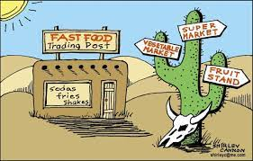
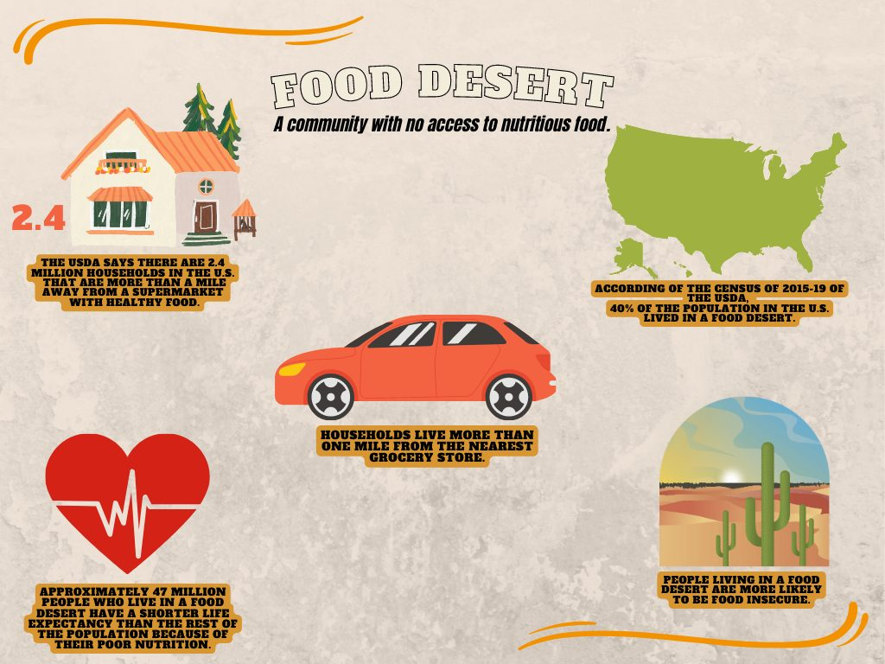

Everyone should have access to fresh foods.
About My Topic
A food desert is an urban area in which it is difficult to buy affordable or good-quality fresh food.
Data about my topic

The number of households living in a food desert within the last decade.
The impact of food deserts?
Where can this problem have lasting effects?
Low-income areas throughout cities in the United States due to certain communities not having supermarkets and food retailers within a reasonable proximenty limiting reliable access to fresh foods.
What can the effects of food deserts also impact?
The lack of access to fresh foods also lead to commmunited filled with more health issues and an increase in the potentially faced finacial strain. The lack of access to healthy food leads to more reports of obesity, diabetes, cardiovascular disease, gout, and more serve health disparties which in turn can lead to higher medical expenses as well as having to spend more on less sustainable food due to longevity of how these meals may strech in comparison to fresher opions and more money spent in transpotation to food.
Sign Our Petition 📢
Everyone regardless of their ecocnomic status deserves access to fresh foods and groceries in general, yet this is often not the case in many urban communities beginning with my very own in Memphis, Tennessee. Memphis is just one of the many cities which has now become populated with food deserts in low-income, minority- filled areas.This is due to the removal of grocery stores in communities and the lack of resources to combat this which needs attention and action.
🖊️ DJ from Memphis supports this.
🖊️ Amy from Hickory Hill supports this.
🖊️ Teresa from South Memphis supports this.